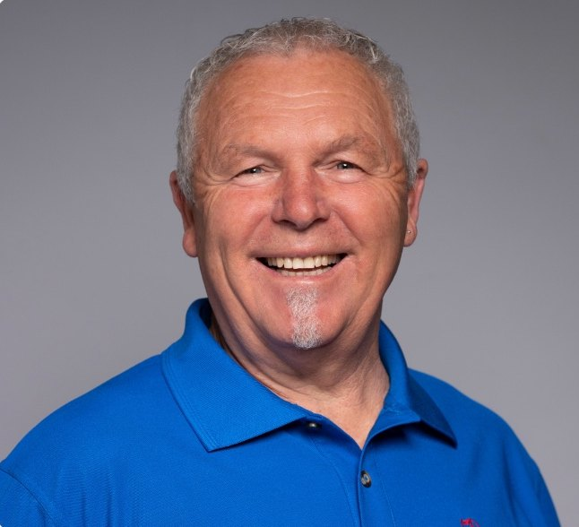
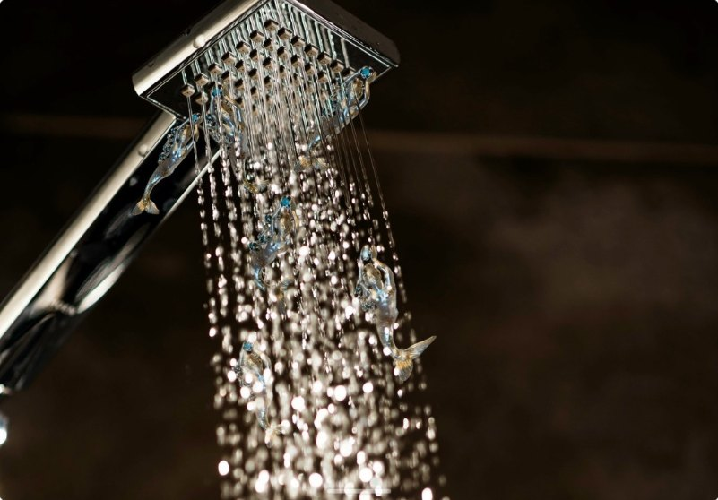
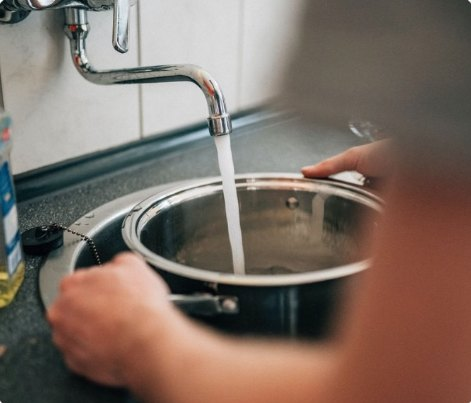
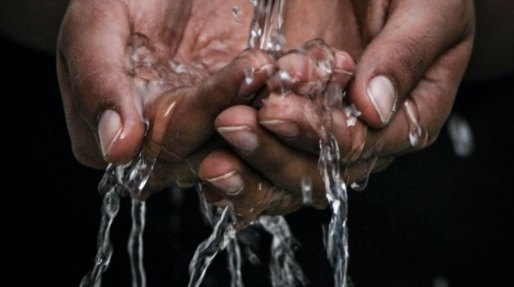

Natürlich belebt
Wasser in seiner ursprünglichen, natürlichen Qualität – ohne Zusätze oder Chemie.
Ich bin Ihr Ansprechpartner für Granderwasser – von der persönlichen Beratung bis zur Umsetzung vor Ort.

Wasser in seiner ursprünglichen, natürlichen Qualität – ohne Zusätze oder Chemie.
Besserer Geschmack, sanfter für Haut und Geräte, vitaler im täglichen Gebrauch.
Langlebige Systeme, ressourcenschonend im Betrieb und wartungsarm im Alltag.

Als Handelsvertreter für Granderwasser und Mitglied im BNI Unternehmernetzwerk Rottweil begleite ich Menschen und Betriebe dabei, ihre Wasserqualität nachhaltig zu verbessern – mit echter Begeisterung für das, was Wasser bewirken kann.
Granderwasser – natürliche Belebung für Haushalt, Gastronomie, Betriebe und Landwirtschaft.
Belebtes Wasser für jeden Haushalt – spürbar im Geschmack und in der Pflege.
Besseres Wasser für Küche und Service – für Qualität, Geschmack und Hygiene.


Nachhaltige Wasserlösungen für Produktion und Reinigung – wirtschaftlich und ressourcenschonend.
Vitales Wasser für Pflanzen, Tiere und Böden – natürlich und wirksam.
Belebtes Wasser für gesunde Tiere – sichtbar im Verhalten und Wohlbefinden.
Natürliches Wasser für Alltag und Wohlbefinden – spürbar bei jedem Schluck.

Ich betreue Kunden, die Wert auf Qualität, Natürlichkeit und Nachhaltigkeit legen.
Systeme für Reinigung, Pflege und Betriebshygiene.
Wartungsarm, langlebig und effizient im täglichen Einsatz.Vitales Wasser für Pflanzen, Böden und Tiere.
Fördert Ertrag, Futterverwertung und nachhaltige Ressourcennutzung.Belebtes Wasser für Alltag, Gesundheit und Wohlbefinden.
Ideal für Trinkwasser, Küche und Pflege – natürlich und wartungsfrei.Belebtes Wasser für Küche, Service und Getränke.
Sorgt für klaren Geschmack, weniger Kalk und konstante Hygiene.Belebtes Wasser aus Überzeugung – in Haushalten, Betrieben und auf Höfen in der Region.
Noch heute startenZufriedene Kunden sind der beste Beweis für Qualität und Verlässlichkeit. Hier ein Auszug aus Haushalten und Betrieben, die auf meine Beratung und Granderwasser setzen.
Herr Fläschel überzeugt nicht nur durch seine Kompetenz, sondern auch durch seinen außergewöhnlichen Service. Er ist jederzeit erreichbar und kümmert sich zuverlässig um seine Kunden – das ist heute keine Selbstverständlichkeit mehr.
Ich kann sowohl das Grander-Produkt als auch Herrn Uwe Fläschel uneingeschränkt weiterempfehlen. Wer Wert auf Qualität, Langlebigkeit und ehrliche Beratung legt, ist hier genau richtig.
Vor ein paar Jahren hatten wir in Südtirol in einem Hotel erstmals „Granderwasser“ und waren davon begeistert. Wir bekamen dann vor Ort die Grander-Anlage, sowohl für den Haus-Wasseranschluss als auch in der kleinen Version für den Skimmer im Pool.
Nun haben wir tolles Wasser im Haus, sowohl als Trinkwasser als auch mit positiven Effekten beispielsweise beim Duschen. Zudem verbrauchen wir nur noch einen Bruchteil der Chemikalien für den Pool und selbst unser Hund trinkt aus dem Pool und erfreut sich bester Gesundheit.
Seit mehreren Jahren nutzen wir die Technologie im Haushalt und sind durchweg sehr zufrieden.
Bereits beim ersten Kontakt fiel mir die kompetente und ruhige Beratung auf. Es wurde sich Zeit genommen, alles verständlich zu erklären. Das hat Vertrauen geschaffen und die Entscheidung erleichtert.
Im Alltag haben wir das Gefühl, dass sich das Wasser angenehmer anfühlt – sowohl beim Duschen als auch beim Trinken. Besonders im Haushalt läuft alles problemlos. Auch langfristig gab es keine Wartungsaufwände. Wir betreiben seit vielen Jahren einen Pool, seit der Nutzung von Grander hat sich die Qualität des Wassers verbessert.
Als Handelsvertreter betreue ich zwei eigenständige Marken mit ganz unterschiedlichen Schwerpunkten. Was beide verbindet: die persönliche Beratung – von mir.
 Wieds Ecochem AG
Wieds Ecochem AG
Systeme für Kühlschmierstoffe, Kühlkreisläufe, Reinigung, Hygiene und Fahrzeugpflege – für Industrie, Kommunen und Einrichtungen.
Zur Wieds-Seite
Sie sind hier
Granderwasser
Für Haushalte, Gastronomie, Landwirtschaft, Tierhaltung und Betriebe – ohne Chemie und Zusätze.
Erzählen Sie mir kurz, wofür Sie Granderwasser einsetzen möchten – ich berate Sie persönlich, von der ersten Frage bis zur Umsetzung vor Ort.